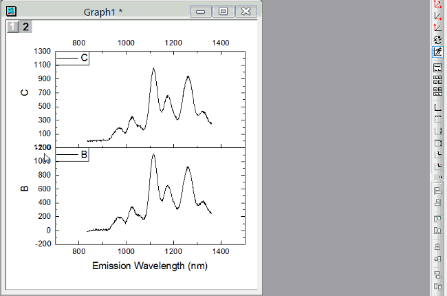

Origin verfügt über Optionen zum automatischen Verbergen von Hilfsstrichen und Beschriftungen. Siehe FAQ-121 Was kann ich tun, wenn meine Hilfsstrichsbeschriftungen zu lang sind und sich überschneiden?
Letztes Update: 27.03.2020
|
Origin verfügt über Optionen zum automatischen Verbergen von Hilfsstrichen und Beschriftungen. Siehe FAQ-121 Was kann ich tun, wenn meine Hilfsstrichsbeschriftungen zu lang sind und sich überschneiden? |
Hinweis: Auf einer einzelnen Achse ist die maximale Anzahl der erlaubten speziellen Hilfsstriche 10.
|
Seit Origin 2016 können Sie eine spezielle Hilfsstrichsbeschriftung auswählen und dann die Schaltflächen auf der Symbolleiste Format verwenden, um die Beschriftung benutzerdefiniert anzupassen. |
Sie können Hilfsstriche oder Hilfsstrichsbeschriftungen bei einem festgelegten Wert der Achse, einschließlich Achsenanfang oder -ende, auf der Registerkarte Spezielle Hilfsstriche im Dialog Achsen verbergen. Ein Beispiel ist die Hilfsstrichsbeschriftung, die am Ende einer Achse in die Hilfsstrichsbeschriftung am Anfang einer anderen Achse übergeht. Achsenanfang und Achsenende werden bereits auf der Registerkarte Beschriftung der Hilfsstriche aufgeführt. Setzen Sie es also nur auf Verbergen. 
Möglicherweise hilft Ihnen auch diese Seite der Schnellhilfe weiter: Eine zweite nichtlineare X- oder Y-Achse hinzufügen.
Schlüsselwörter:Stelle, Beschriftung, Achsen, Hilfsstrich, Position von Hilfsstrich, verbergen, Achsenanfang, Achsenende
Origin-Version mind. erforderlich: 2015 SR0